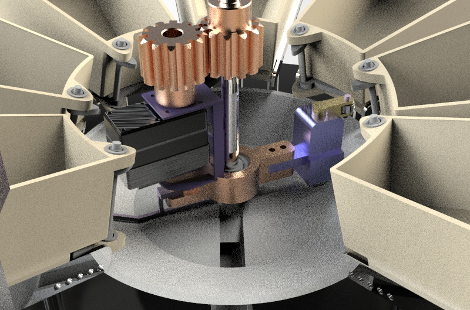
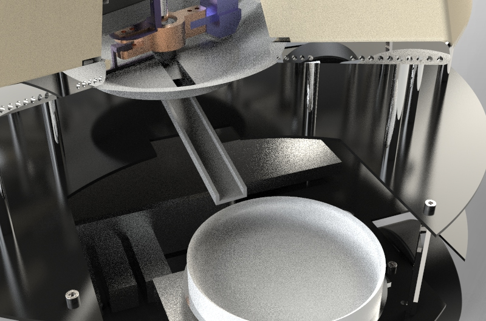
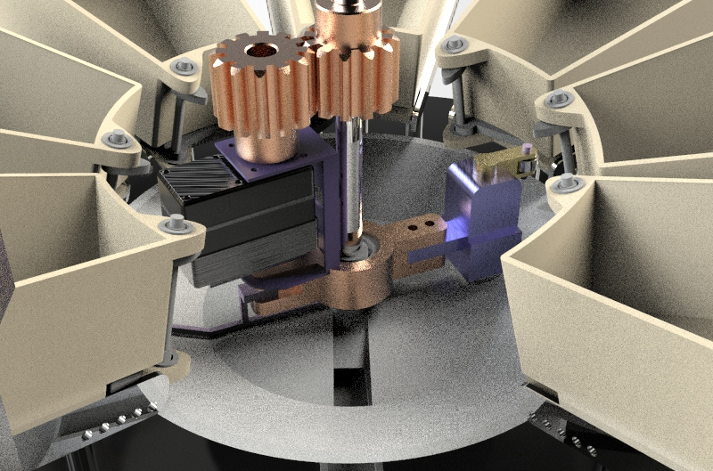
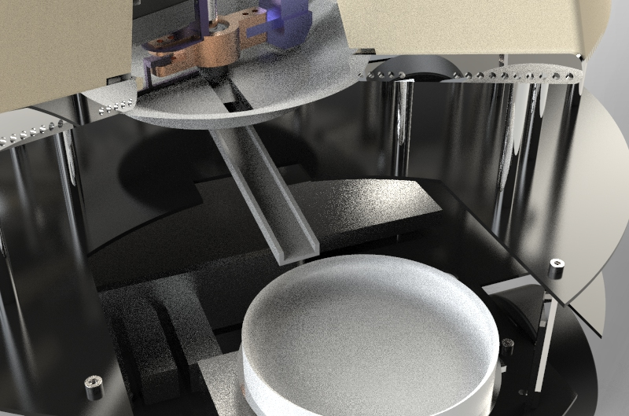

Project Overview
The Medical Companion Robot represents a breakthrough in elderly care technology, combining advanced robotics with healthcare solutions. Designed to address the growing needs of an aging population, this innovative system offers comprehensive support for independent living through automated medication management, real-time health monitoring, and emergency assistance.
Mission
To enhance the quality of life for elderly individuals through intelligent healthcare automation and reliable companionship.
Innovation
Integration of SLAM navigation, skeleton recognition, and smart medication dispensing in a unified platform.
Impact
Reducing caregiver burden while ensuring medication adherence and emergency response for seniors.

 


